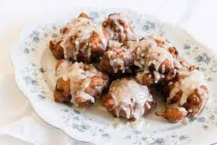

Tiramisu

Description
Making fresh peach fritters with chunks of peaches in a peach batter instead of
chunks of peaches in a plain batter changes everything. These fritters are pure peach goodness.
Serve with vanilla ice cream and an optional Bourbon whiskey simple syrup.
Ingredients
- 1 generous cup cubed fresh peach
- 2 tablespoons white sugar
- 1/8 teaspoon vanilla extract
- 1 pinch ground nutmeg
- 1 pinch ground cinnamon
- 1 tablespoon panko breadcrumbs
- 1/2 cup self-rising flour
Steps
- Add cubed peaches to a bowl and toss well with 2 tablespoons sugar.
- Heat oil in a deep-fryer or large saucepan to 375 degrees F (190 degrees C).
- Stir vanilla extract, nutmeg, cinnamon, and panko breadcrumbs into peaches.
Add self-rising flour and stir until batter is no longer dry or sticky but
fully moistened, about 1 minute. Rest batter for 3 to 5 minutes before frying.
- Transfer 6 heaping spoonfuls of batter into the hot oil, and fry for 90 seconds.
Carefully tip fritters over to the other side and fry 90 seconds more. Flip
again, and cook 1 minute more.
- Remove to cool on a rack until just barely warm.
- To make Bourbon syrup, combine 1/4 cup sugar, water, and Bourbon in a small saucepan...
- Serve fritters with vanilla ice cream and Bourbon syrup.
back to homepage